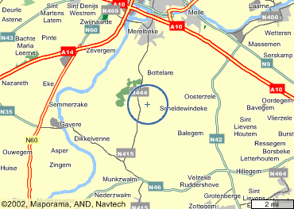
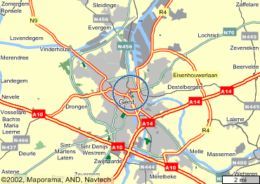

| .BELGIË | |
|
KMI Bodemkundige dienst van België De Standaard Varia |
|
| .OOST-VLAANDEREN | |
 |
(hier stond een weerwidget van weeronline.nl, die niet meer bestaat) |
 |
(hier stond een weerwidget van weeronline.nl, die niet meer bestaat) |